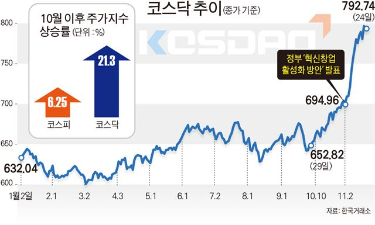
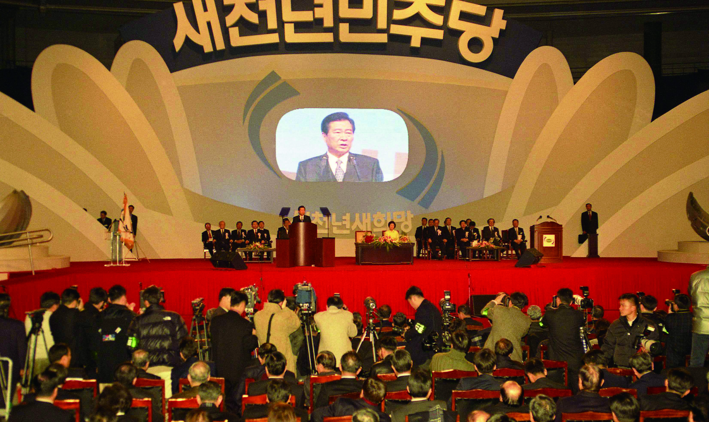

2000년 6월 13일부터 15일까지, 대한민국의 김대중 대통령과 북한의 김정일 국방위원장은 평양에서 역사적인 첫 남북 정상회담을 가졌다. 이는 남북이 분단된 이후
55년 만에 처음으로 두 정상이 직접 만나 대화를 나눈 자리로, 당시 한반도는 물론 전 세계의 이목이 집중되었다.
정상회담의 가장 큰 성과는 바로 회담 마지막 날 발표된 **‘6.15 남북 공동선언’**이다. 이 선언에서 남북은 통일 문제를 우리 민족끼리 자주적으로 해결할 것,
남북이 각각 제안한 통일 방안(남측의 연합제, 북측의 낮은 단계 연방제)에 공통점이 있다고 인정하며 상호 존중할 것, 이산가족 상봉을 추진할 것, 경제 협력을 포함한
각종 교류를 확대할 것 등을 합의했다.
특히 김정일 국방위원장의 서울 답방 추진도 포함되어, 향후 지속적인 대화의 가능성을 보여주었다.
이 회담은 단순한 정치 이벤트를 넘어, 남북 관계의 전환점을 만든 획기적인 사건으로 평가된다. 실제로 이후 이산가족 상봉이 재개되었고, 남북 경제 협력의 상징인
개성공단과 금강산 관광 사업이 본격화되는 계기가 되었다.
남북 간 신뢰를 쌓는 첫 걸음을 디뎠다는 점에서 큰 의미가 있으며, 김대중 대통령은 이 공로를 인정받아 2000년 노벨평화상을 수상했다.
하지만 한편으로는 김정일 위원장의 서울 답방이 실제로 이루어지지 않았고, 남북 간의 핵심 갈등 요소가 해소되지 않았다는 점에서 한계를 지닌다는 비판도 있다. 이후 정권
교체와 함께 남북 관계가 다시 경색되는 등 지속적인 진전으로 이어지지는 못했다는 점도 아쉬움으로 남는다.
그럼에도 불구하고 6.15 남북 정상회담은 남북 관계사에 있어 전례 없는 대화의 시작이라는 점에서, 그리고 민족 간 화해와 평화를 향한 중요한 이정표로서 여전히 큰 역사적
의미를 지닌다.
2000년대 초, 대한민국은 전 세계적인 IT 열풍과 더불어 전례 없는 벤처 붐을 경험하였습니다. '정보화 사회'라는 미래 전망과 함께 인터넷, 반도체, 모바일, 통신 등 신기술 산업에 대한 기대가 폭발적으로 고조되었으며, 이러한 분위기는 주식 시장에 고스란히 반영되었습니다. 특히 코스닥 시장은 기술 중심의 벤처기업들이 대거 상장하며 유례없는 상승세를 기록하였습니다. 당시 개인 투자자들은 '닷컴 기업'이라는 명칭만으로도 투자에 뛰어들었으며, 단기간에 수익을 얻은 이른바 '주식 부자'들의 사례가 언론을 통해 확산되면서 투기적 분위기가 고조되었습니다.
2000년 3월, 코스닥지수는 마침내 2,834.44포인트를 기록하며 사상 최고치를 경신하였습니다. 많은 이들이 '제2의 삼성전자'를 꿈꾸며 벤처기업에 과감히 투자하였고, 심지어 적자 기업들조차 상장을 강행하며 높은 시가총액을 형성하였습니다. 당시 투자자들 사이에서는 기업의 실적보다는 미래 성장성에만 초점을 맞춘 '묻지마 투자'라는 신조어가 등장할 정도였습니다. 카페24, 새롬기술, 다음커뮤니케이션, 한글과컴퓨터 등 다수의 IT 기업들이 주목받았으며, 벤처 최고경영자(CEO)들은 주식 시세차익을 통해 단숨에 부를 축적하기도 했습니다.
그러나 이러한 뜨거운 열기는 오래 지속되지 못했습니다. 같은 해 4월, 미국 나스닥 시장에서 기술주 중심의 '닷컴 버블'이 붕괴되면서 세계 증시는 급격한 조정을 맞이하였습니다. 미국 주요 IT 기업들의 주가가 급락하자, 한국 코스닥 시장 또한 투자 심리가 위축되며 하락세로 전환되었습니다. 기업들의 실적은 기대에 미치지 못했으며, 일부 기업들은 허위 공시나 회계 조작 문제로 사회적 물의를 야기하기도 했습니다. 기술력 없이 투자 유치만으로 급성장했던 기업들의 실체가 드러나기 시작하면서 주가는 연일 하락하였습니다.
결국 하반기에는 코스닥지수가 1,000포인트 아래로 급락하며 시장 붕괴에 준하는 충격을 안겨주었습니다. 이 과정에서 수많은 개인 투자자들이 막대한 재산 손실을 입고 시장을 떠났으며, 벤처기업에 대한 불신이 사회 전반으로 확산되었습니다. 상장 폐지되는 기업들이 속출하였고, 벤처 열풍의 중심에 있던 여러 창업가들 역시 법적 책임을 지거나 경영 일선에서 물러나야 했습니다. 당시 많은 이들은 이 상황을 '한국형 IT 버블 붕괴'라고 명명하였으며, 코스닥 시장의 구조적인 문제점 또한 수면 위로 부상하였습니다.
이 사건은 한국 금융 시장에 두 가지 중요한 교훈을 남겼습니다. 첫째, 실체가 불분명한 미래 전망만으로 형성된 투자는 언제든지 붕괴될 수 있다는 점입니다. 둘째, 스타트업이나 벤처기업을 육성하기 위해서는 투자와 함께 투명한 경영, 건전한 회계, 그리고 기술 중심의 심사가 반드시 병행되어야 한다는 것입니다. 이후 정부는 벤처기업의 상장 요건을 강화하고, 회계 투명성 확보 및 공시 의무 강화 등 제도 개선에 착수하였습니다. 또한 금융당국은 투자자 보호를 위한 교육과 정보 제공에 나섰으며, 코스닥 시장 전반의 안정화를 위한 개편 작업도 진행되었습니다.
비록 많은 이들이 이 시기를 실패로 기억하지만, 결과적으로 한국은 이 과정을 거치면서 IT 산업의 기반을 더욱 견고히 다질 수 있었습니다. 당시 어려움을 극복하고 살아남은 기업들 중 일부는 이후 세계적인 기업으로 성장하였으며, 벤처 생태계는 더욱 성숙하고 체계적인 방향으로 전환되었습니다. 'IT 버블과 코스닥 급등락'은 단순한 주가 폭등과 하락을 넘어, 한국 자본주의 역사 속에서 시장의 순기능과 그 한계를 동시에 보여준 대표적인 사례로 기억될 것입니다.
2000년 1월 20일, 김대중 대통령을 중심으로 한 당시 여권 세력은 기존 집권 여당이던 ‘새정치국민회의’를 해체하고, 새로운 정당인 ‘새천년민주당’을 창당하였습니다. '새천년'이라는 명칭은 시대적 전환기를 맞아 정치 개혁과 국민 통합을 이루겠다는 의지를 담고 있었으며, 이는 김대중 정부의 중도개혁 노선을 보다 명확히 계승하고 발전시키기 위한 전략적인 정당 재편으로 풀이됩니다. 단순한 명칭 변경을 넘어, 1997년 대선으로 집권한 김대중 정부가 정치적 기반을 강화하고 다가올 총선에 대비하여 국민적 신뢰를 새롭게 다지기 위한 중요한 행보였습니다.
새천년민주당의 창당에는 김중권, 한화갑, 정동영, 김근태 등 당시 여권의 핵심 정치인들이 대거 참여하였습니다. 창당 당시 당이 내세운 핵심 가치는 '국민과 함께하는 개혁', '민생 우선', '정치 쇄신'이었으며, 당 강령에는 정치개혁, 사회안정, 경제 활성화, 복지 확대, 남북 화해협력 등을 중심으로 한 중도개혁주의 노선이 반영되었습니다. 김대중 대통령은 명예총재로 추대되었고, 당은 창당 직후 4월에 예정된 제16대 국회의원 총선을 목표로 조직 정비에 착수하며 수도권과 중도층 민심 공략에 주력하였습니다.
2000년 4월 13일 실시된 제16대 총선에서 새천년민주당은 115석을 확보하며 제1당 등극에는 실패하였습니다. 그러나 자유민주연합 등과의 연합을 통해 국회 과반 의석을 유지하며 여당의 지위를 이어갈 수 있었습니다. 비록 한나라당이 133석으로 제1당이 되었지만, 김대중 정부는 새천년민주당을 통해 국정 운영의 연속성을 확보할 수 있었고, 이 시기 새천년민주당은 정치적 정통성과 정권 기반을 동시에 유지하며 개혁과 타협 사이에서 복잡한 정치적 조율을 수행하였습니다.
이후 2002년 대선을 앞두고 새천년민주당은 한국 정치사에 획기적인 실험을 단행합니다. 바로 '국민참여경선제'를 도입하여 당의 대선 후보를 결정한 것입니다. 이는 기존의 밀실 공천 관행을 벗어나 국민이 직접 후보를 선택하는 제도로, 당시 노무현 후보가 이 제도를 통해 정몽준, 이인제 등 거물급 정치인들을 제치고 대선 후보로 선출되는 이변을 연출하였습니다. 노무현 후보는 지역주의 타파, 세대교체, 정치개혁을 전면에 내세우며 대중의 폭넓은 호응을 얻었고, 결국 2002년 대선에서 승리하며 민주당 계열 정당으로서는 두 번째 정권 재창출을 이루어냈습니다.
그러나 이러한 영광은 오래 지속되지 못했습니다. 대선 이후 여당이 된 새천년민주당은 개혁 노선을 두고 내부 갈등이 심화되었고, 노무현 대통령 지지 세력과 기존 당내 주류 간의 충돌이 격화되었습니다. 결국 2003년, 노무현 대통령을 지지하던 개혁 성향의 의원들과 지지층이 탈당하여 '열린우리당'을 창당하면서 새천년민주당은 분당이라는 초유의 사태를 맞이하게 됩니다. 이로 인해 당세는 급격히 약화되었고, 기존 민주당 세력은 야당으로 전락하게 되었습니다. 이후에도 당명과 체제를 여러 차례 변경하며 존속하였으나, 정치적 영향력은 점차 감소하였습니다.
새천년민주당은 짧은 존속 기간에도 불구하고 한국 정치사에 굵직한 족적을 남긴 정당입니다. 참여정부의 출발점이 되었고, 국민참여경선제 도입, 정당개혁 실험, 정당의 중도개혁 세력의 중심이라는 점에서 긍정적인 평가를 받습니다. 동시에 분당과 내부 갈등, 리더십 부재 등으로 인해 정치적 기반을 상실한 사례로도 회자됩니다. 결과적으로 새천년민주당은 2000년대 초반 한국 정당 정치의 실험과 진통을 압축적으로 보여주는 사례이자, 오늘날 민주당 계열 정당의 중요한 뿌리이자 전환기의 상징으로 역사에 기록되어 있습니다.